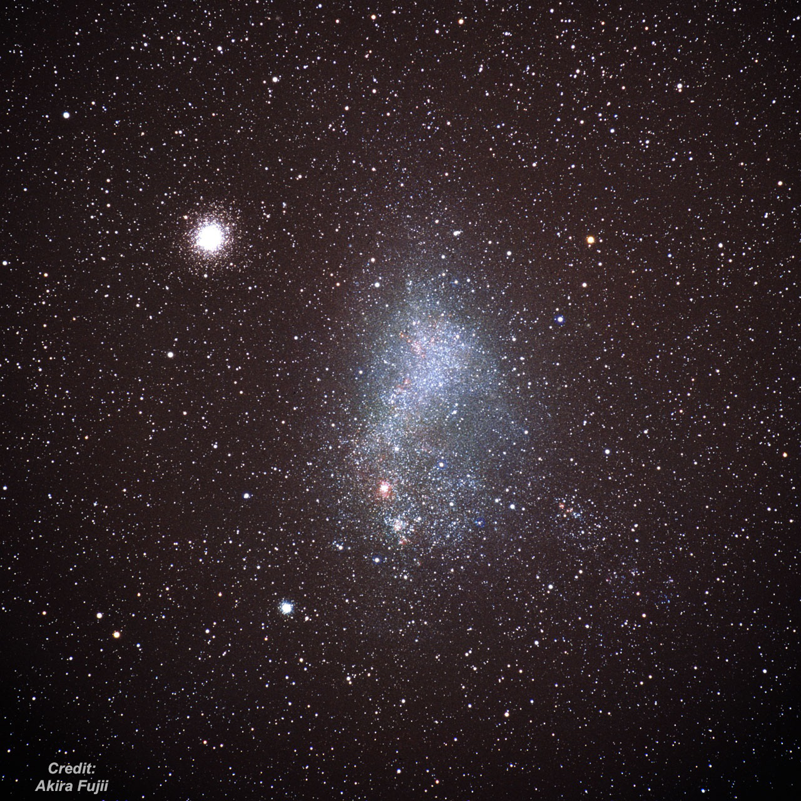

The Magnificient 47 Tucanae (NGC 104)
- NGC 104 = 47 Tucanae
- RA: 00h 24m 05.2s
- Dec: -72° 04' 50"
- Type: Globular Cluster
Diameter: 30.9' Concentration Class: III Mag of brightest stars: 11.7 Mag of horizontal branch: 14.1 Distance: ~15,000 light years Age: ~12 billion years Since I'm heading to Australia in less than 2 weeks for a week of observing, I thought I would pay homage to 47 Tucanae, one of the grandest spectacles in the sky -- though only well seen from the southern hemisphere. Nicolas-Louis de Lacaille discovered the nebulous appearance in 1751-1752 with a 1/2-inch telescope at 8x during his expedition to the Cape of Good Hope. It appeared "like the nucleus of a fairly bright comet." Lacaille placed it in his group I, consisting of nebulae without stars. The cluster was noted, though, as a "star" in Bayer's Uranometria, which was first published in 1603. The designation "47 Tuc" comes from Bode's extension of Flamsteed numbers to the southern constellations (these are not used today except for 47 Tuc and 30 Dor). With his 9-inch speculum reflector from Paramatta (now a suburb of Sydney), James Dunlop logged "this is a beautiful large round nebula, about 8' diameter, very gradually condensed to the centre. This beautiful globe of light is easily resolved into stars of a dusky colour. *The compression to the centre is very great, and the stars are considerably scattered south preceding and north following." *His sketch in figure 1 of his catalog shows a beautifully resolved, elongated cluster. John Herschel first observed the magnificient globular from the Cape of Good Hope on 11 Apr 1834 with his 18-inch speculum reflector. He logged "The great cluster preceding the Nubecula Minor. Estimated dia of the denser portion 5'; of the whole (not, however, including loose stragglers) 8'. Stars 14..16 mag. and one of 12th mag N.p. the centre. Excessively compressed. (N.B. In a sweep below the pole, when of course owing to the low altitude much of the light was lost.)" *His observation from 12 Aug 1834 reads: "A most glorious cluster. The stars are equal, 14th mag., immensely numerous and compressed. Its last outliers extend to a distance of 2 min, 16 sec in RA from the centre. It is compressed to a blaze of light at the centre, the diameter of the more compressed part being 30 arcsec in RA. It is at first very gradual, then pretty suddenly very much brighter in the middle. It is completely insulated. After it has passed, the ground of the sky is perfectly black throughout the whole breadth of the sweep. There is a double star 11th mag. preceding the centre." On 21 Sep 1835 he wrote: "Fills the field with its stragglers, condensation in three distinct stages, first very gradually, next pretty suddenly,
and finally very suddenly very much brighter in the middle up to a central blaze whose diameter in RA is 13.5 sec and whose colour is ruddy or orange-yellow, which contrasts evidently with the white light of the rest. The stars are all nearly equal (12..14 mag). A stupendous object." *His final record of the object was on 5 Nov 1836: "A most magnificent globular cluster. It fills the field with its outskirts, but within its more compressed part, I can insulate a tolerably defined circular space of 90" dia wherein the compression is much more decided and the stars seem to run together; and this part I think has a pale pinkish or rose-colour." I find it interesting that Herschel described the core of the cluster as "ruddy or orange-yellow" and later as "pinkish or rose-colour"! To me the core generally appears pale yellow (no problem seeing color). 47 Tucanae is an easy 4th magnitude naked-eye blur just west of the Small Magellanic Cloud. *It's visible from a dark sky while very low in the sky as well as suburban locations when higher in the sky.

I've made numerous observations of 47 Tucanae from Australia -- several times I've just soaked up the view as words can't really capture the experience, but here's a sample from July 2002 in an 18-inch f/4.5 from the Southern Highlands. "At 171x, this breathtaking globular was viewed at over 50° elevation and was stunningly resolved into several thousand stars out to a diameter of over 25'. *The star density steadily increases towards the
center. *The relatively small 4' core was blazing and highly resolved right to the edge of a very small compressed nucleus. *A 3-dimensional affect was very strong with layers of stars forming a dense mat over the core. *Many of the stars in the halo are connected in chains and lanes. *A 9 mm Nagler (229x) did a better job of busting apart the stars in the core, although the cluster overfilled the field at this power. Although the total visual magnitude is just slightly fainter than Omega Centauri and the size slightly smaller, 47 Tucanae is certainly equal if not surpassing Omega Centauri in visual impact due to its dazzling central blaze." Another memorable view was 5 years back in November 2010 using a 30-inch f/4.5 from Coonabarabran. "Absolutely stunning view in the 30" at 163x and 264x. *Even in the 37' field of the 21mm Ethos, the stars appeared to fill the entire field, only thinning out near the edge. *The pinpoint stars were amazingly packed, but increased in intensity to a relatively small, blazing core, which was plastered with resolved stars. *The very center of the nucleus contained a small, intense knot overlaid with packed stars giving a strong impression of layers. *I immediately noticed the core had a pale yellowish tint." Now I'm psyched up for another view soon again! GIVE IT A GO AND LET US KNOW!